COCO: Performance Assessment¶
See: ArXiv e-prints, arXiv:1605.03560, 2016.We present an any-time performance assessment for benchmarking numerical optimization algorithms in a black-box scenario, applied within the COCO benchmarking platform. The performance assessment is based on runtimes measured in number of objective function evaluations to reach one or several quality indicator target values. We argue that runtime is the only available measure with a generic, meaningful, and quantitative interpretation. We discuss the choice of the target values, runlength-based targets, and the aggregation of results by using simulated restarts, averages, and empirical distribution functions.
Introduction¶
We present ideas and concepts for performance assessment when benchmarking numerical optimization algorithms in a black-box scenario. Going beyond a simple ranking of algorithms, we aim to provide a quantitative and meaningful performance assessment, which allows for conclusions like algorithm A is seven times faster than algorithm B in solving a given problem or in solving problems with certain characteristics. For this end, we record algorithm runtimes, measured in number of function evaluations to reach predefined target values during the algorithm run.
Runtimes represent the cost of optimization. Apart from a short, exploratory experiment [1], we do not measure the algorithm cost in CPU or wall-clock time. See for example [HOO1995] for a discussion on shortcomings and unfortunate consequences of benchmarking based on CPU time.
In the COCO platform [HAN2016co], we display average runtimes (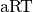, see Section Averaging Runtime) and the empirical distribution function of runtimes (ECDF, see Section Empirical Distribution Functions). When displaying runtime distributions, we consider the aggregation over target values and over subclasses of problems, or all problems.
| [1] | The COCO platform provides a CPU timing experiment to get a rough estimate of the time complexity of the algorithm [HAN2016ex]. |
Terminology and Definitions¶
In the COCO framework in general, a problem, or problem instance triplet, 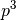, is defined by the search space dimension  , the objective function 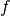, to be minimized, and its instance parameters
, the objective function 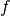, to be minimized, and its instance parameters  for instance 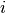.
More concisely, we consider a set of parametrized benchmark functions
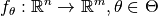 and the corresponding problems 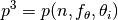.
Different instances vary by having different shifted optima, can use different rotations that are applied to the variables, have different optimal -values, etc. [HAN2009fun].
The instance notion is introduced to generate repetition while avoiding possible exploitation of artificial function properties (like location of the optimum in zero).
The separation of dimension and instance parameters in the notation serves as a hint to indicate that we never aggregate over dimension and always aggregate over all -values.
for instance 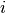.
More concisely, we consider a set of parametrized benchmark functions
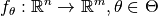 and the corresponding problems 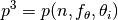.
Different instances vary by having different shifted optima, can use different rotations that are applied to the variables, have different optimal -values, etc. [HAN2009fun].
The instance notion is introduced to generate repetition while avoiding possible exploitation of artificial function properties (like location of the optimum in zero).
The separation of dimension and instance parameters in the notation serves as a hint to indicate that we never aggregate over dimension and always aggregate over all -values.
In the performance assessment setting, we associate to a problem instance a quality indicator mapping and a target value, such that a problem becomes a quintuple 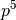. Usually, the quality indicator remains the same for all problems, while we have subsets of problems which only differ in their target value.
On Performance Measures¶
Evaluating performance is necessarily based on performance measures, the definition of which plays a crucial role for the evaluation. Here, we introduce a list of requirements a performance measure should satisfy in general, as well as in the context of black-box optimization specifically. In general, a performance measure should be
- quantitative, as opposed to a simple ranking of entrants (e.g., algorithms). Ideally, the measure should be defined on a ratio scale (as opposed to an interval or ordinal scale) [STE1946], which allows to state that “entrant A is times better than entrant B”. [2]
- assuming a wide variation of values such that, for example, typical values do not only range between 0.98 and 1.0, [3]
- well interpretable, in particular by having meaning and semantics attached to the measured numbers,
- relevant and meaningful with respect to the “real world”,
- as simple and as comprehensible as possible.
In the context of black-box optimization, the runtime to reach a target value, measured in number of function evaluations, satisfies all requirements. Runtime is well-interpretable and meaningful with respect to the real-world as it represents time needed to solve a problem. Measuring number of function evaluations avoids the shortcomings of CPU measurements that depend on parameters like the programming language, coding style, machine used to run the experiment, etc., that are difficult or impractical to control. If however algorithm internal computations dominate wall-clock time in a practical application, comparative runtime results in number of function evaluations can usually be adapted a posteri to reflect the practical scenario. This hold also true for a speed up from parallelization.
| [2] | A variable which lives on a ratio scale has a meaningful zero, allows for division, and can be taken to the logarithm in a meaningful way. See for example Level of measurement on Wikipedia. |
| [3] | A transformation like 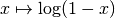 could alleviate the problem in this case, given it actually zooms in on relevant values. |
Quality Indicators¶
At each evaluation count (time step)  of an algorithm which optimizes a problem instance of the function 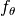 in dimension , we apply a quality indicator mapping.
A quality indicator 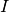 maps the set of all solutions evaluated
so far (or recommended [HAN2016ex]) to a problem-dependent real value.
Then, a runtime measurement can be obtained from each of a (large) set of
problem instances 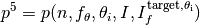.
The runtime on this problem instance is defined as the evaluation count
when the quality indicator value drops below the target for the first time, otherwise runtime remains undefined.
of an algorithm which optimizes a problem instance of the function 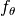 in dimension , we apply a quality indicator mapping.
A quality indicator 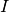 maps the set of all solutions evaluated
so far (or recommended [HAN2016ex]) to a problem-dependent real value.
Then, a runtime measurement can be obtained from each of a (large) set of
problem instances 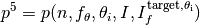.
The runtime on this problem instance is defined as the evaluation count
when the quality indicator value drops below the target for the first time, otherwise runtime remains undefined.
In the single-objective noiseless case, the quality indicator outputs the best so far observed (i.e. minimal and feasible) function value.
In the single-objective noisy case, the quality indicator returns the 1%-tile of the function values of the last 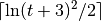 evaluated (or recommended) solutions. [4]
In the multi-objective case, the quality indicator is based on a negative hypervolume indicator of the set of evaluated solutions (more specifically, the the non-dominated archive) [BRO2016], while other well- or lesser-known multi-objective quality indicators are possible.
| [4] | This feature will only be available in the new implementation of the COCO framework. |
Fixed-Budget versus Fixed-Target Approach¶
Starting from the most basic convergence graphs which plot the evolution of a quality indicator, to be minimized, against the number of function evaluations, there are essentially only two ways to measure the performance.
- fixed-budget approach:
- We fix a maximal budget of function evaluations, and measure the reached quality indicator value. A fixed search budget can be pictured as drawing a vertical line in the figure (blue line in Figure Fixed-Budget versus Fixed-Target).
- fixed-target approach:
- We fix a target quality value and measure the number of function evaluations, the runtime, to reach this target. A fixed target can be pictured as drawing a horizontal line in the figure (red line in Figure Fixed-Budget versus Fixed-Target).

Fixed-Budget versus Fixed-Target
For the performance assessment of algorithms, the fixed-target approach is superior to the fixed-budget approach since it gives quantitative and interpretable results.
- The fixed-budget approach (vertical cut) does not give quantitatively interpretable data: the observation that Algorithm A reaches a quality indicator value that is, say, two times smaller than the one reached by Algorithm B has in general no interpretable meaning, mainly because there is no a priori way to determine how much more difficult it is to reach an indicator value that is two times smaller. This usually depends on the function, the definition of the quality indicator and even the specific indicator values compared.
- The fixed-target approach (horizontal cut) measures the time to reach a target quality value. The measurement allows conclusions of the type: Algorithm A is two (or ten, or a hundred) times faster than Algorithm B in solving this problem. The choice of the target value determines the difficulty and often the characteristic of the problem to be solved.
Furthermore, for algorithms that are invariant under certain transformations of the function value (for example under order-preserving transformations, as comparison-based algorithms like DE, ES, PSO [AUG2009]), fixed-target measures are invariant under these transformations if the target values are transformed accordingly. That is, only the horizontal line needs to be moved. Fixed-budget measures require the transformation of all resulting measurements individually.
Missing Values¶
Investigating the Figure Fixed-Budget versus Fixed-Target more carefully, we find that not all graphs intersect with either the vertical or the horizontal line. On the one hand, if the fixed budget is too large, the algorithm might solve the function before the budget is exceeded. [5] The algorithm performs better than the measurement is able to reflect, which can lead to a serious misinterpretations. The remedy is to define a final target value and measure the runtime if the final target is hit. [6]
On the other hand, if the fixed target is too difficult, the algorithm may never hit the target under the given experimental conditions. [7] The algorithm performs worse than the experiment is able to reflect, while we still get a lower bound for this missing runtime instance. A possible remedy is to run the algorithm longer. Another possible remedy is to use the final quality indicator value as measurement. This measurement however should only be interpreted as ranking result, defeating the original objective. A third (impartial) remedy is to record the overall number of function evaluations of this run and use simulated restarts, see below.
| [5] | Even in continuous domain, from the view point of benchmarking, or application in the real world, or numerical precision, the set of solutions (or of solution sets) that indisputably solve the problem has a volume larger than zero. |
| [6] | This is also advisable because declaring an algorithm better when it reaches, say, 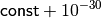 instead of 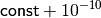, is more often than not unjustified. The former result may only indicate the lack of practical termination conditions. |
| [7] | However, under mildly randomized conditions, for example with a randomized initial solution, the restarted algorithm reaches any attainable target with probability one. The time needed can of course well be beyond any reasonable practical limitations. |
Target Value Setting¶
First, we define for each problem instance 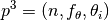
a reference quality indicator value, 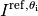.
In the single-objective case this is the optimal function value.
In the multi-objective case this is the hypervolume indicator of an approximation of the Pareto front [BRO2016].
Based on this reference value and a set of target precision values, which are
independent of the instance , we define a target value
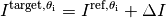
for each precision , giving rise to the product set of all problems and all -values.
Runlength-based Target Values¶
Runlength-based target values are a novel way to define the target values based on a reference data set. Like for performance profiles [DOL2002], the resulting empirical distribution can be interpreted relative to a reference algorithm or a set of reference algorithms. Unlike for performance profiles, the resulting empirical distribution is a data profile [MOR2009] reflecting the true (opposed to relative) difficulty of the respective problems for the respective algorithm.
We assume to have given a reference data set with recorded runtimes to reach a prescribed, usually large set of quality indicator target values [8] as in the fixed-target approach described above. The reference data serve as a baseline upon which the runlength-based targets are computed. To simplify wordings we assume w.l.o.g. that a single reference algorithm has generated this data set.
Now we choose a set of increasing reference budgets. To each budget, starting with the smallest, we associate the easiest (largest) target for which (i) the average runtime (taken over all respective instances, , see below) of the reference algorithm exceeds the budget and (ii, optionally) that had not been chosen for a smaller budget before. If such target does not exist, we take the final (smallest) target.
Like this, an algorithm that reaches a target within the associated budget is better than the reference algorithm on this problem.
Runlength-based targets are used in COCO for the single-objective expensive optimization scenario.
The artificial best algorithm of BBOB-2009 (see below) is used as reference algorithm with either the five budgets of 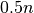, 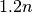, 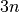, 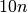, and 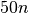 function evaluations, where is the problem
dimension, or with 31 targets evenly space on the log scale between and and without the optional constraint from (ii) above. In the latter case, the empirical distribution function of the runtimes of the reference algorithm shown in a semilogx plot approximately resembles a diagonal straight line between the above two reference budgets.
Runlength-based targets have the advantage to make the target value setting less dependent on the expertise of a human designer, because only the reference budgets have to be chosen a priori. Reference budgets, as runtimes, are intuitively meaningful quantities, on which it is comparatively easy to decide upon. Runlength-based targets have the disadvantage to depend on the choice of a reference data set, that is, they depend on a set of reference algorithms.
| [8] | By default, the ratio between two neighboring target precision values is 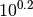 and the largest value is (dynamically) chosen such that the first evaluation of the worst algorithm hits the target. |
Runtime Computation¶
In the performance assessment context of COCO, a problem instance can be defined by the quintuple search space dimension, function, instantiation parameters, quality indicator mapping, and quality indicator target value, 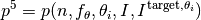. [9] For each benchmarked algorithm, a single runtime is measured on each problem instance. From a single run of the algorithm on the problem instance triple , we obtain a runtime measurement for each corresponding problem quintuple , more specifically, one for each target value which has been reached in this run, or equivalently, for each target precision. This also reflects the anytime aspect of the performance evaluation in a single run.
Formally, the runtime 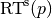 is a random variable that represents the number of function evaluations needed to reach the quality indicator target value for the first time. A run or trial that reached the target value is called successful. [10] For unsuccessful trials, the runtime is not defined, but the overall number of function evaluations in the given trial is a random variable denoted by 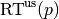. For a single run, the value of is the same for all failed targets.
We consider the conceptual restart algorithm. Given an algorithm has a strictly positive probability 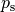 to solve a problem, independent restarts of the algorithm solve the problem with probability one and exhibit the runtime
(1)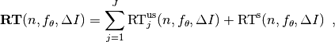
where 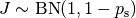 is a random variable with negative binomial distribution that models the number of unsuccessful runs until one success is observed and 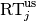 are independent random variables corresponding to the evaluations in unsuccessful trials [AUG2005]. If the probability of success is one, 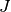 equals zero with probability one and the restart algorithm coincides with the original algorithm.
Generally, the above equation for  expresses the runtime from repeated independent runs on the same problem instance (while the instance is not given explicitly). For the performance evaluation in the COCO framework, we apply the equation to runs on different instances , however instances from the same function, with the same dimension and the same target precision.
expresses the runtime from repeated independent runs on the same problem instance (while the instance is not given explicitly). For the performance evaluation in the COCO framework, we apply the equation to runs on different instances , however instances from the same function, with the same dimension and the same target precision.
| [9] | From the definition of  , we can generate a set of problems 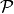 by varying one or several of the parameters. We never vary dimension and always vary over all available instances for generating 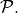 , we can generate a set of problems 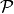 by varying one or several of the parameters. We never vary dimension and always vary over all available instances for generating 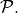 |
| [10] | The notion of success is directly linked to a target value. A run can be successful with respect to some target values (some problems) and unsuccessful with respect to others. Success also often refers to the final, most difficult, smallest target value, which implies success for all other targets. |
Runs on Different Instances¶
Different instantiations of the parametrized functions are a natural way to represent randomized repetitions. For example, different instances implement random translations of the search space and hence a translation of the optimum [HAN2009fun]. Randomized restarts on the other hand can be conducted from different initial points. For translation invariant algorithms both mechanisms are equivalent and can be mutually exchanged.
We interpret thus runs performed on different instances 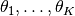 as repetitions of the same problem. Thereby we assume that instances of the same parametrized function are similar to each other, and more specifically that they exhibit the same runtime distribution for each given .
We hence have for each parametrized problem a set of 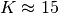 independent runs, which are used to compute artificial runtimes of the conceptual restart algorithm.
Simulated Restarts and Runtimes¶
The runtime of the conceptual restart algorithm as given in (1) is the basis for displaying performance within COCO.
We use the 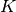 different runs on the same function and dimension to simulate virtual restarts with a fixed target precision.
We assume to have at least one successful run—otherwise, the runtime remains undefined, because the virtual procedure would never stop.
Then, we construct artificial, simulated runs from the available empirical data:
we repeatedly pick, uniformly at random with replacement, one of the trials until we encounter a successful trial.
This procedure simulates a single sample of the virtually restarted algorithm from the given data.
As given in (1) as , the measured, simulated runtime is the sum of the number of function evaluations from the unsuccessful trials added to the runtime of the last and successful trial. [11]
| [11] | In other words, we apply (1) such that is uniformly distributed over all measured runtimes from successful instances , 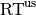 is uniformly distributed over all evaluations seen in unsuccessful instances , and has a negative binomial distribution 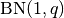, where 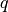 is the number of unsuccessful instance divided by all instances. |
Bootstrapping Runtimes¶
In practice, we repeat the above procedure between a hundred or even thousand times, thereby sampling  simulated runtimes from the same underlying distribution,
which then has striking similarities with the true distribution from a restarted algorithm [EFR1994].
To reduce the variance in this procedure, when desired, the first trial in each sample is picked deterministically instead of randomly as the 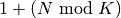-th trial from the data. [12]
Picking the first trial data as specific instance could also be
interpreted as applying simulated restarts to this specific instance rather than
to the entire set of problems 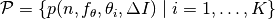.
simulated runtimes from the same underlying distribution,
which then has striking similarities with the true distribution from a restarted algorithm [EFR1994].
To reduce the variance in this procedure, when desired, the first trial in each sample is picked deterministically instead of randomly as the 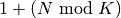-th trial from the data. [12]
Picking the first trial data as specific instance could also be
interpreted as applying simulated restarts to this specific instance rather than
to the entire set of problems 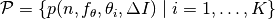.
| [12] | The variance reducing effect is best exposed in the case where all runs are successful and 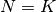, in which case each data is picked exactly once. This example also suggests to apply a random permutation of the data before to simulate virtually restarted runs. |
Rationales and Limitations¶
Simulated restarts aggregate some of the available data and thereby extend their range of interpretation.
- Simulated restarts allow in particular to compare algorithms with a wide range of different success probabilities by a single performance measure. [13] Conducting restarts is also valuable approach when addressing a difficult optimization problem in practice.
- Simulated restarts rely on the assumption that the runtime distribution for each instance is the same. If this is not the case, they still provide a reasonable performance measure, however with less of a meaningful interpretation for the result.
- The runtime of simulated restarts may heavily depend on termination conditions applied in the benchmarked algorithm, due to the evaluations spent in unsuccessful trials, compare (1). This can be interpreted as disadvantage, when termination is considered as a trivial detail in the implementation—or as an advantage, when termination is considered a relevant component in the practical application of numerical optimization algorithms.
- The maximal number of evaluations for which simulated runtimes are meaningful and representative depends on the experimental conditions. If all runs are successful, no restarts are simulated and all runtimes are meaningful. If all runs terminated due to standard termination conditions in the used algorithm, simulated restarts reflect the original algorithm. However, if a maximal budget is imposed for the purpose of benchmarking, simulated restarts do not necessarily reflect the real performance. In this case and if the success probability drops below 1/2, the result is likely to give a too pessimistic viewpoint at or beyond the chosen maximal budget. See [HAN2016ex] for a more in depth discussion on how to setup restarts in the experiments.
- If only few or no successes have been observed, we can see large effects without statistical significance. Namely, 4/15 successes are not statistically significant against 0/15 successes on a 5%-level.
| [13] | The range of success probabilities is bounded by the number of instances to roughly 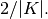 |
Averaging Runtime¶
The average runtime (), introduced in [PRI1997] as ENES and
analyzed in [AUG2005] as success performance and referred to as
ERT in [HAN2009ex], estimates the expected runtime of the restart
algorithm given in (1). Generally, the set of trials
over which the average is taken is generated by varying only.
We compute the from a set of trials as the sum of all evaluations in unsuccessful trials plus the sum of the runtimes in all successful trials, both divided by the number of successful trials.
Motivation¶
The expected runtime of the restart algorithm writes [AUG2005]
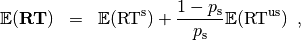
where 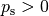 is the probability of success of the algorithm and notations from above are used.
Given a data set with 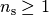 successful runs with runtimes 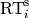, and 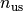 unsuccessful runs with evaluations, the average runtime reads
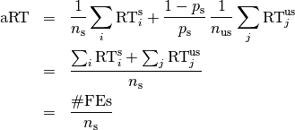
where is the fraction of successful trials, 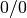 is understood as zero and is the number of function evaluations conducted in all trials before to reach the given target precision.
Rationale and Limitations¶
The average runtime, , is taken over different instances of the same function, dimension, and target precision, as these instances are interpreted as repetitions. Taking the average is meaningful only if each instance obeys a similar distribution without heavy tail. If one instance is considerably harder than the others, the average is dominated by this instance. For this reason we do not average runtimes from different functions or different target precisions, which however could be done if the logarithm is taken first (geometric average). Plotting the divided by dimension against dimension in a log-log plot is the recommended way to investigate the scaling behavior of an algorithm.
Empirical Distribution Functions¶
We display a set of simulated runtimes with the empirical cumulative distribution function (ECDF), AKA empirical distribution function. Informally, the ECDF displays the proportion of problems solved within a specified budget, where the budget is given on the -axis. More formally, an ECDF gives for each -value the fraction of runtimes which do not exceed , where missing runtime values are counted in the denominator of the fraction.
Rationale, Interpretation and Limitations¶
Empirical cumulative distribution functions are a universal way to display unlabeled data in a condensed way without losing information. They allow unconstrained aggregation, because each data point remains separately displayed, and they remain entirely meaningful under transformation of the data (e.g. taking the logarithm).
The empirical distribution function from a set of problems where only the target value varies, recovers an upside-down convergence graph with the resolution steps defined by the targets [HAN2010].
When runs from several instances are aggregated, the association to the single run is lost, as is the association to the function when aggregating over several functions. This is particularly problematic for data from different dimensions, because dimension can be used as decision parameter for algorithm selection. Therefore, we do not aggregate over dimension.
The empirical distribution function can be read in two distinct ways.
- -axis as independent variable:
for any budget (-value), we see the fraction of problems solved within the budget as -value, where the limit value to the right is the fraction of solved problems with the maximal budget.
- -axis as independent variable:
for any fraction of easiest problems (-value), we see the maximal runtime observed on these problems on the -axis. When plotted in
semilogx, a horizontal shift indicates a runtime difference by the respective factor, quantifiable, e.g., as “five times faster”. The area below the -value and to the left of the graph reflects the geometric runtime average on this subset of problems, the smaller the better.
Relation to Previous Work¶
Empirical distribution functions over runtimes of optimization algorithms are also known as data profiles [MOR2009]. They are widely used for aggregating results from different functions and different dimensions to reach a single target precision [RIO2012]. In the COCO framework, we do not aggregation over dimension but aggregate often over a wide range of target precision values.
Examples¶
We display in Figure ECDF the ECDF of the (simulated) runtimes of
the pure random search algorithm on the set of problems formed by 15 instances of the sphere function (first function of the single-objective bbob test
suite) in dimension each with 51 target precisions between and uniform on a log-scale and 1000 bootstraps.

ECDF
We can see in this plot, for example, that almost 20 percent of the problems
were solved within function evaluations.
Runtimes to the right of the cross at have at least one unsuccessful run.
This can be concluded, because with pure random search each unsuccessful run exploits the maximum budget.
The small dot beyond depicts the overall fraction of all successfully solved functions-target pairs, i.e., the fraction of pairs for which at least one trial (one instantiation) was successful.
We usually divide the set of all (parametrized) benchmark functions into subgroups sharing similar properties (for instance separability, unimodality, ...) and display ECDFs which aggregate the problems induced by these functions and all targets. Figure ECDF for a subgroup of functions shows the result of random search on the first five functions of the bbob testsuite, separate (left) and aggregated (right).

ECDF for a subgroup of functions
bbob testsuite over 51 target values.
Right: Aggregated ECDF of the same data, that is, all functions
in one graph.Finally, we also naturally aggregate over all functions of the benchmark and hence obtain one single ECDF per algorithm per dimension. In Figure ECDF over all functions and all targets, the ECDF of different algorithms are displayed in a single plot.

ECDF over all functions and all targets
bbob suite.The thick maroon line with diamond markers annotated as “best 2009” corresponds to the artificial best 2009 algorithm: for each set of problems with the same function, dimension and target precision, we select the algorithm with the smallest from the BBOB-2009 workshop and use for these problems the data from the selected algorithm. The algorithm is artificial because we may use even for different target values the runtime results from different algorithms. [14]
We observe that the artificial best 2009 algorithm is about two to three time faster than the left envelope of all single algorithms and solves all problems in about function evaluations.
| [14] | The best 2009 curve is not guaranteed to be an upper left envelope of the ECDF of all algorithms from which it is constructed, that is, the ECDF of an algorithm from BBOB-2009 can cross the best 2009 curve. This may typically happen if an algorithm has for the most easy problems a large runtime variation its is not the best but the short runtimes show up to the left of the best 2009 graph. |
Acknowledgments
This work was supported by the grant ANR-12-MONU-0009 (NumBBO) of the French National Research Agency.
The authors would like to thank Raymond Ros, Steffen Finck, Marc Schoenauer and Petr Posik for their many invaluable contributions to this work.
References
| [AUG2005] | (1, 2, 3) A. Auger and N. Hansen (2005). Performance evaluation of an advanced local search evolutionary algorithm. In Proceedings of the IEEE Congress on Evolutionary Computation (CEC 2005), pages 1777–1784. |
| [AUG2009] | A. Auger, N. Hansen, J.M. Perez Zerpa, R. Ros and M. Schoenauer (2009). Empirical comparisons of several derivative free optimization algorithms. In Acte du 9ime colloque national en calcul des structures, Giens. |
| [BRO2016] | (1, 2) D. Brockhoff, T. Tušar, D. Tušar, T. Wagner, N. Hansen, A. Auger (2016). Biobjective Performance Assessment with the COCO Platform. ArXiv e-prints, arXiv:1605.01746. |
| [DOL2002] | E.D. Dolan, J.J. Moré (2002). Benchmarking optimization software with performance profiles. Mathematical Programming 91.2, 201-213. |
| [EFR1994] | B. Efron and R. Tibshirani (1994). An introduction to the bootstrap. CRC Press. |
| [HAN2009ex] | N. Hansen, A. Auger, S. Finck, and R. Ros (2009). Real-Parameter Black-Box Optimization Benchmarking 2009: Experimental Setup, Research Report RR-6828, Inria. |
| [HAN2016co] | N. Hansen, A. Auger, O. Mersmann, T. Tušar, D. Brockhoff (2016). COCO: A Platform for Comparing Continuous Optimizers in a Black-Box Setting. ArXiv e-prints, arXiv:1603:08785. |
| [HAN2010] | N. Hansen, A. Auger, R. Ros, S. Finck, and P. Posik (2010). Comparing Results of 31 Algorithms from the Black-Box Optimization Benchmarking BBOB-2009. Workshop Proceedings of the GECCO Genetic and Evolutionary Computation Conference 2010, ACM, pp. 1689-1696 |
| [HAN2009fun] | (1, 2) N. Hansen, S. Finck, R. Ros, and A. Auger (2009). Real-parameter black-box optimization benchmarking 2009: Noiseless functions definitions. Research Report RR-6829, Inria, updated February 2010. |
| [HAN2016ex] | (1, 2, 3) N. Hansen, T. Tušar, A. Auger, D. Brockhoff, O. Mersmann (2016). COCO: The Experimental Procedure, ArXiv e-prints, arXiv:1603.08776. |
| [HOO1995] | J.N. Hooker (1995). Testing heuristics: We have it all wrong. In Journal of Heuristics, pages 33-42. |
| [HOO1998] | H.H. Hoos and T. Stützle. Evaluating Las Vegas algorithms—pitfalls and remedies. In Proceedings of the Fourteenth Conference on Uncertainty in Artificial Intelligence (UAI-98), pages 238–245, 1998. |
| [MOR2009] | (1, 2) J.J. Moré and S.M. Wild (2009). Benchmarking Derivative-Free Optimization Algorithms, SIAM J. Optim., 20(1), 172–191. |
| [PRI1997] | K. Price (1997). Differential evolution vs. the functions of the second ICEO. In Proceedings of the IEEE International Congress on Evolutionary Computation, pages 153–157. |
| [RIO2012] | L.M. Rios and N.V. Sahinidis (2013). Derivative-free optimization: A review of algorithms and comparison of software implementations. Journal of Global Optimization, 56(3):1247– 1293. |
| [STE1946] | S.S. Stevens (1946). On the theory of scales of measurement. Science 103(2684), pp. 677-680. |